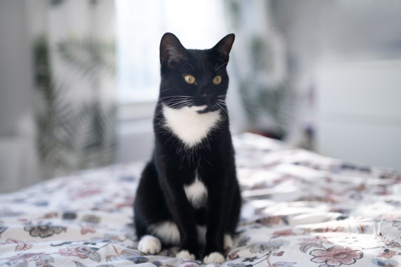

hai :3

"Where there is a low-to-medium grade white spotting limited to the face,
paws, throat and chest of an otherwise black cat, they are known in the United States as a tuxedo cat.
High-grade bicolor results in Van-patterned cats, which is typical for the Turkish Van breed. There are many patterns between, such as "cap-and-saddle", "mask-and-mantle" and "harlequin" also known as "magpie"
"tuxedo cat"